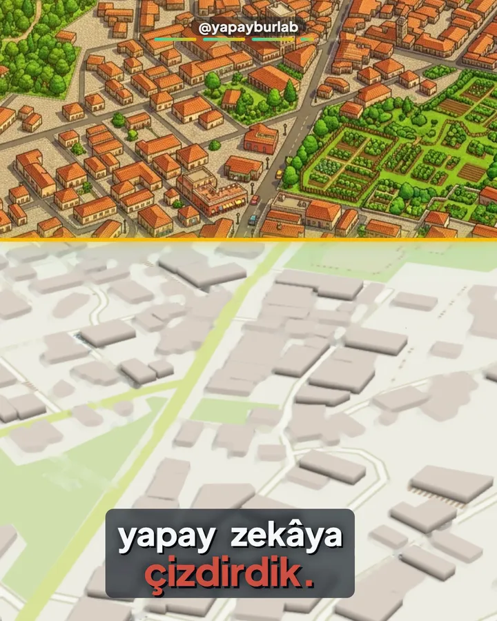
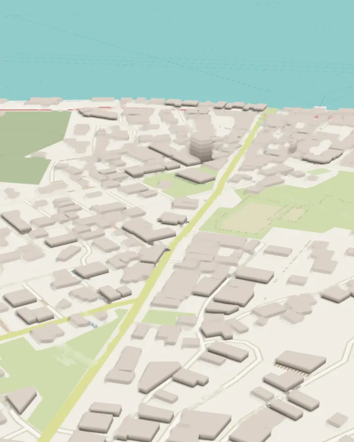
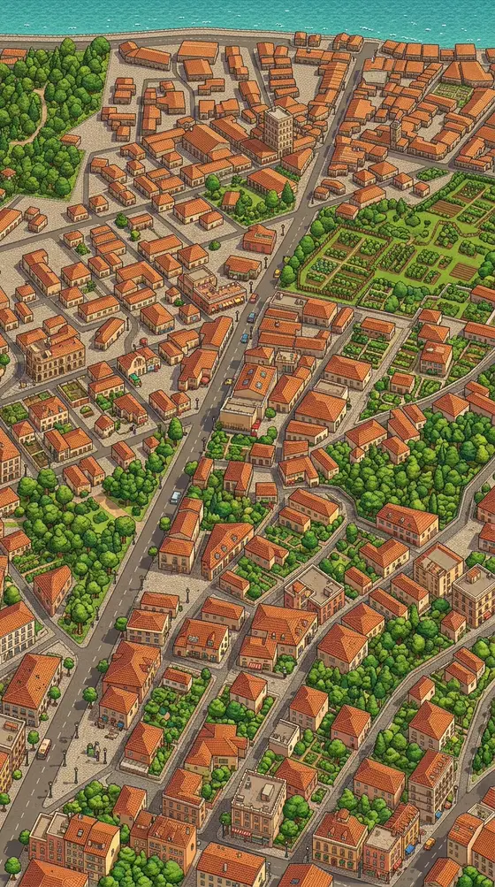
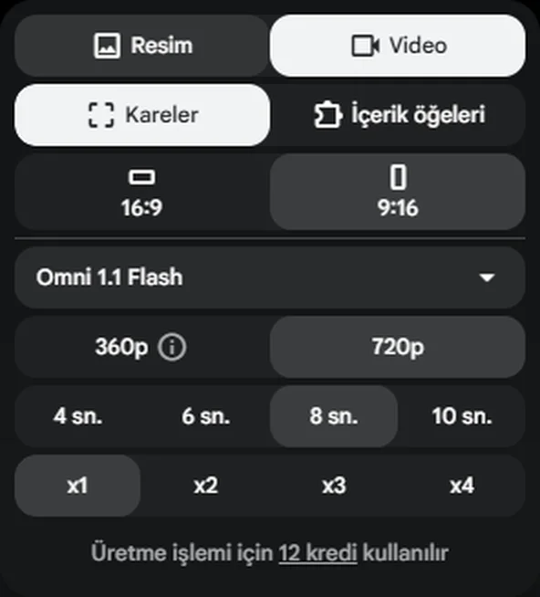

Videoda Kuzguncuk'ta denediğimiz yöntem burada adım adım, gerçekten kullandığımız iki istemle: harita görüntüsü, izometrik çizim, canlanan sokak.

Videodan: aynı Kuzguncuk görüntüsü, üstte çizime dönmüş hâli.
Isometric Istanbul nedir?
Yahya Bedirhan Pak'ın projesi. Büyükşehir'in herkese açık 3B şehir uygulamasından (İBB 3B İstanbul) sabit açıyla görüntü alınıyor; bu görüntüler yapay zekâyla izometrik çizime dönüşüyor.
315° · 54,7°
Kameranın kilitlendiği yön ve yaklaşık eğim.
24.601
Denizlerle birlikte kare sayısı (kara 22.042 + deniz 2.559).
1.176
Öğretmen modelin çizdiği örnek kare (153 simge yapı dahil).
Öğretmen–öğrenci tekniği
Öğretmen model GPT Image 2.5 yalnızca 1.176 örnek kare çiziyor.
Bu çizimlerle açık model Qwen-Image-2.1-Turbo eğitiliyor (Qwen Araştırma Lisansı).
Isometric Istanbul 54,7° eğim kullanıyor. Biz OSM Buildings'te tilt=45 ile aldık; 54,7°'yi çizim isteminde istedik. Daha dik ve tamamen tepeden açıları da denedik; çizime en uygun girdi bu oldu.
Sayfa açılınca ekran görüntüsü al; sitenin üst menüsünü ve alt şeridini kırp.

Kuzguncuk, 315° yönden. Bu görselde harita etiketleri temizlendi.
2
Google Flow'da Nano Banana 2.1 ile çizime çevir
Flow'da yeni proje aç, ekran görüntüsünü yükle. Ayarlar:
Resim9:16Nano Banana 2.1x2
İstemi yapıştır, gönder:
ÇİZİM İSTEMİ
Transform this 3D city map screenshot into a charming, high-detail isometric architectural illustration and clean pixel-art hybrid, inspired by classic 1990s city-building simulation games. Strictly preserve the exact street geometry, building footprints, roof heights, and coastal/park layout from the reference image. Orthographic isometric projection at a 54.7-degree tilt and 315-degree azimuth. Warm Mediterranean afternoon sunlight with soft crisp shadows, detailed terracotta tiled roofs, warm stone and pastel facades, lush volumetric green trees along the streets, and stylized turquoise water. Completely clean illustration: NO text, NO street labels, NO brand logos, NO billboards, NO human faces. Crisp edges, masterpiece digital miniature art.
İki çıktıdan yazı, logo ve yüz içermeyeni seçtik. Çizim sokak düzenini yaklaşık korur; her binayı aynen kopyalamaz.
Bizim planımızda bu iki görsel bakiyeden kredi düşürmedi. Senin planında farklı olabilir; göndermeden önce ekrandaki tutara bak.

Seçtiğimiz çıktı.
3
Omni 1.1 Flash ile 8 saniye canlandır
Seçtiğin çizimi başlangıç karesi yap. Ayarlar:
VideoKareler9:16Omni 1.1 Flash720p8 snx1

Bizim ekranımız: 12 kredi.
CANLANDIRMA İSTEMİ
Locked-off, 100% static orthographic isometric camera view. A miniature isometric city illustration coming to life: tiny stylized isometric cars in red, white, and yellow driving smoothly along the exact road lanes at a steady pace. Lush green tree canopies gently swaying in a soft breeze. Subtle shimmering light reflections on the turquoise water surface. All buildings, roofs, and roads remain completely rigid, sharp, and locked in place with zero camera movement or warping. Warm afternoon ambient lighting.